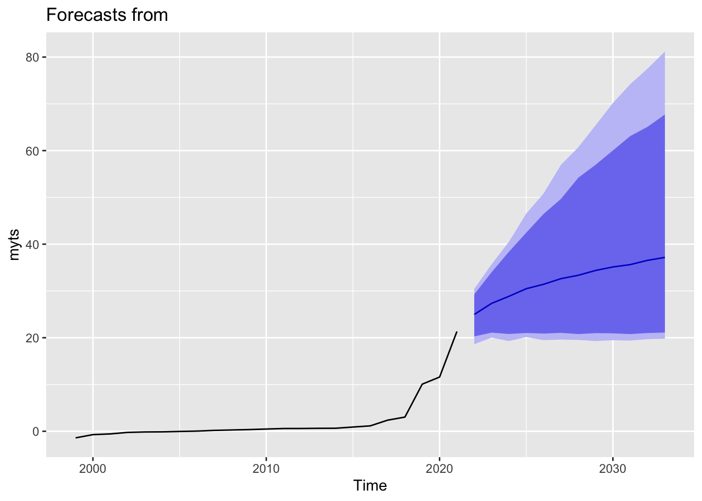

Chapter 5 Bayes Forecast
library(bayesforecast)Bayesian Forecast SARIMA:
In our last model specification, we decided to use the bayesforecast package. In particular we are fitting a SARIMA model in Stan.
SARIMA stands for seasonal auto-regressive integrated moving average. This is an extension of ARIMA and is therefore more robust as it is able to support seasonal data.
ARIMA is a method that combines both auto-regressive methods and moving averages- it is widely used on time series data in attempts to predict future values. There are four components that explain time series data, trend, seasonality, irregularity, and cyclic components.
5.1 Model Parameters
Here are the parameters for an ARIMA model:
P - Order of the AR term. This is the number of Y to be used as predictors. For example, if we are predicting 2021 earnings, how many previous years earnings are we going to use?
Q - Order of the MA term. This is the number of lagged forecast errors. How many past forecast errors will we be using?
D - The minimum differencing period. A stationary time series implies one that has properties that do not depend on the time at which the series is observed.
As mentioned above, SARIMA is able to support seasonal data. Below are the parameters for a SARIMA model that ARIMA does not have.
P - Seasonal autoregressive order. A P=1 would make use of the first seasonally offset observation in the model, e.g. t-(m1) or t-12. A P=2, would use the last two seasonally offset observations t-(m1), t-(m2).
D - Seasonal difference order. A D of 1 would calculate a first order seasonal difference and a Q=1 would use a first order error in the model (e.g. moving average).
Q - Seasonal moving average order.
M - The number of time steps for a single seasonal period. M is a very important parameter as it influences the P, D, and Q parameters. For example, an m of 5 for yearly data suggests a 5-year seasonal cycle (in the context of business cycles.
5.2 Model 1
After running the model, we will then move on to predict the earnings of the future year for the companies. The companies we are going to predict will be Amazon (symbol: “AMZN”), American Airlines (symbol: “AAL”), and Ford (symbol: “F”).
AMZN <- data %>%
filter(COMPANY == 'AMZN') %>%
dplyr::select(EARNINGS_Scaled) %>%
arrange(EARNINGS_Scaled)
vector <- AMZN$EARNINGS_Scaled
myts <- ts(vector, start=c(1999), end=c(2021), frequency=1)
sf1 = stan_sarima(ts = myts,order = c(1,1,1),seasonal = c(1,1,1),
prior_mu0 = student(mu = 0,sd = 1,df = 7))sf1##
## y ~ Sarima(1,1,1)
## 23 observations and 1 dimension
## Differences: 1 seasonal Differences: 0
## Current observations: 22
##
## mean se 5% 95% ess Rhat
## mu0 0.6122 0.0074 -0.0389 1.4521 3946.370 1.0002
## sigma0 2.2608 0.0055 1.7567 2.8966 3880.739 0.9999
## ar 0.4249 0.0068 -0.4297 0.9536 3504.369 1.0006
## ma -0.1344 0.0046 -0.5678 0.3905 3646.405 1.0012
## loglik -50.2659 0.0246 -52.8948 -47.7647 3635.604 1.0000
##
## Samples were drawn using sampling(NUTS). For each parameter, ess
## is the effective sample size, and Rhat is the potential
## scale reduction factor on split chains (at convergence, Rhat = 1).check_residuals(sf1)
autoplot(forecast(object = sf1,h = 12))First, for Amazon, we could see that the earnings are predicted to increase from 2021 to 2030, moving from 21 billions to around 38 billions in 2030.
For the residuals plot, we can see that the residuals expect to increase in the future and keep increasing as the farther from 2020, the data becomes more and more unpredictable. Overall, the residuals lie around -1 and 0, which suggests that the error is not that far off from the actual value.
We then move on to the other companies: Microsoft and American Airlines:
AAL <- data %>%
filter(COMPANY == 'AAL') %>%
dplyr::select(EARNINGS_Scaled) %>%
arrange(EARNINGS_Scaled)
vector <- AAL$EARNINGS_Scaled
myts <- ts(vector, start=c(1999), end=c(2021), frequency=1)
sf1 = stan_sarima(ts = myts,order = c(1,1,1),seasonal = c(1,1,1),
prior_mu0 = student(mu = 0,sd = 1,df = 7))check_residuals(sf1)autoplot(forecast(object = sf1,h = 12))For American Airlines, we see a different story. As we can see from the graph, as airlines industry is an extremely cyclical field, the earnings fluctuate a lot. We could see that they fluctuate a lot during the previous years. With that in mind, the model predicts that American Airlines will not improve the much during the following years from 2021 to 2030.
F <- data %>%
filter(COMPANY == 'F') %>%
dplyr::select(EARNINGS_Scaled) %>%
arrange(EARNINGS_Scaled)
vector <- F$EARNINGS_Scaled
myts <- ts(vector, start=c(1999), end=c(2021), frequency=1)
sf1 = stan_sarima(ts = myts,order = c(1,1,1),seasonal = c(1,1,1),
prior_mu0 = student(mu = 0,sd = 1,df = 7))check_residuals(sf1)autoplot(forecast(object = sf1,h = 12))For Ford, it follows the same case as American Airlines. Even though the earnings increase, the model predicts that Ford’s earning will stay relatively the same throughout the year from 2021 to 2030. For the residuals part, the residuals fluctuate around -1 to 1, with some exceptions of 6 and 11 in around 2002 and 2020 (the year when COVID-19 started).